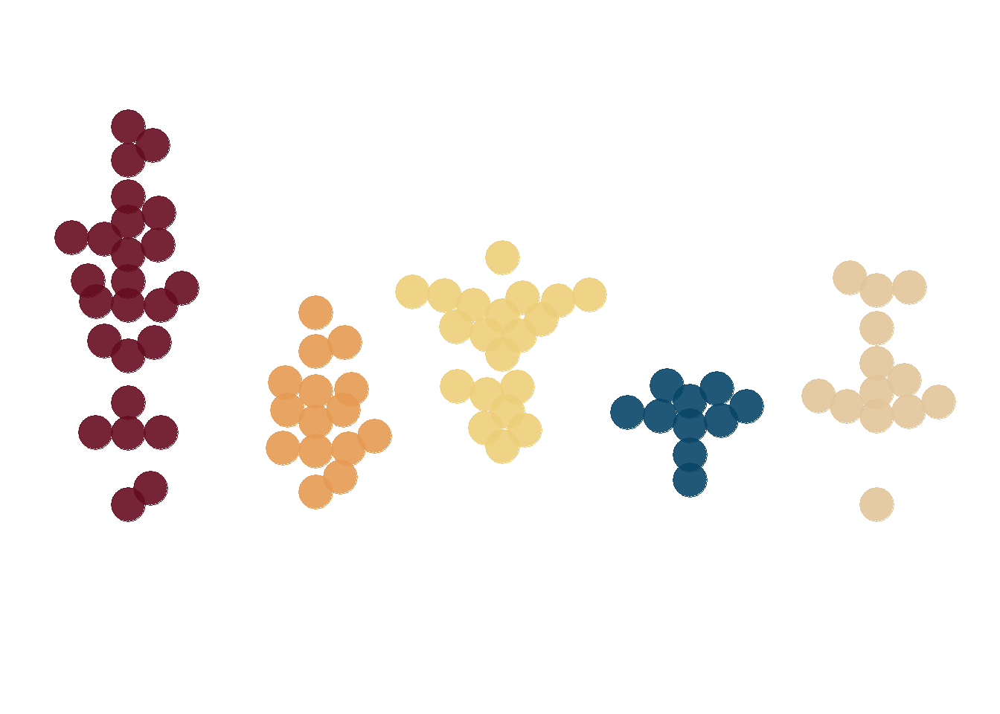

library(tidyverse) # untuk manupulasi, merapikan, & visualisasi dataour_palette <-c('#660d20',
'#e59a52',
'#edce79',
'#094568',
'#e1c59a')set.seed(2000)
df1 = tibble(var = 'A', val = rnorm(n = 25, mean = 5.5, sd = 1.5))
df2 = tibble(var = 'B', val = rnorm(n = 15, mean = 4.5, sd = 1.0))
df3 = tibble(var = 'C', val = rnorm(n = 20, mean = 5.0, sd = 1.0))
df4 = tibble(var = 'D', val = rnorm(n = 10, mean = 4.0, sd = 0.5))
df5 = tibble(var = 'E', val = rnorm(n = 13, mean = 5.0, sd = 1.5))
df <- rbind(df1, df2, df3, df4, df5) %>%
mutate(Variable = as_factor(var),
value = round(val, 2)) %>%
select(Variable, value)beeswarm <- df %>%
ggplot(aes(x = Variable,
y = value,
color = Variable,
fill = Variable)) +
ggbeeswarm::geom_beeswarm(alpha = .9,
size = 8,
cex = 3.5,
show.legend = FALSE) +
scale_color_manual(values = our_palette,
guide = 'none') +
scale_fill_manual(values = our_palette,
guide = 'none') +
scale_y_continuous(limits = c(0, 10)) +
theme_minimal() +
theme(
axis.title = element_blank(),
axis.text = element_blank(),
axis.line = element_blank(),
panel.grid.major = element_blank(),
panel.grid.minor = element_blank(),
panel.background = element_rect(fill = '#FFFFFF',
color = NA),
plot.background = element_rect(fill = '#FFFFFF',
color = '#FFFFFF')
)